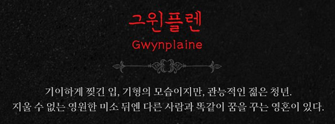

그윈플렌
: 박효신 , 박은태, 박강현
우르수스
민영기,
양준모
넘버
- SCENE 1. 클랜찰리 궁 – 다음 날
- 자장가 리프라이즈 (LULLABY REPRISE) : 그윈플렌
- 각하의 소유 (ALL OF THIS IS YOURS) : 그윈플렌, 페드로, 앙상블 #
- 각하의 소유 리프라이즈 (ALL OF THIS IS YOURS REPRISE) : 그윈플렌, 앙상블
- SCENE 2. 서더크 감옥 외부
- 눈물의 성 리프라이즈 (HOUSE OF TEARS REPRISE) : 우르수스, 앙상블
- 세상은 잔인한 곳 리프라이즈/한탄 (IT’S A CRUEL WORLD REPRISE/LAMENT) : 우르수스, 앙상블
- SCENE 3. 태드캐스터 여관
- 막은 안 올라 (THE SHOW MUST NOT GO ON) : 우르수스, 데아, 비너스, 피비, 앙상블 #
- 넌 내 삶의 전부 리프라이즈 (HE IS MY EVERYTHING REPRISE) : 데아
- 무너져 내릴 마음 (FRAGILE IS THE HEART) : 우르수스
- SCENE 4. 클랜찰리 궁
- 몽타쥬: 누굴까 (MONTAGE: WHO AM I) : 그윈플렌, 데아, 우르수스, 어린 그윈플렌, 앙상블
- 모두의 세상 (I COULD CHANGE THE WORLD) : 그윈플렌조규현 버전
- SCENE 5. 공작 내실, 클랜찰리 궁
- 아무 말도 (DON’T SAY A WORD) : 조시아나
- 여왕의 명으로 리프라이즈 (HER MAJESTY PROCLAIMS REPRISE) : 앤 여왕, 수행원들
- SCENE 6. 클랜찰리 궁의 복도
- 검투 (SWORDFIGHT) : 오케스트라
- 행복할 권리 리프라이즈 (THE RIGHT TO BE HAPPY REPRISE) : 데이빗 경
- SCENE 7. 상원
- 우린 상위 일프로 (LORDS OF THE LAND/WE ARE THE 1%) : 앤 여왕, 앙상블
- 그 눈을 떠 (OPEN YOUR EYES) : 그윈플렌
- 웃는 남자 (The Man Who Laughs) : 그윈플렌, 조시아나
- 내 삶을 살아가 (LIFE MOVES ON) : 조시아나
- SCENE 8. 템즈 강가
- 눈물은 강물에 리프라이즈 (DROWN YOUR SORROWS SLOW REPRISE) : 앙상블
- 무너져 내릴 마음 리프라이즈 (FRAGILE IS THE HEART REPRISE) : 우르수스
- 나무 위의 천사들 리프라이즈 (ANGELS IN THE TREE REPRISE) : 그윈플렌, 데아
- 넌 내 삶의 전부 리프라이즈 (YOU ARE MY EVERYTHING REPRISE) : 그윈플렌, 데아
- 그럴까? 리프라이즈 (CAN IT BE REPRISE) : 그윈플렌